MessageDialog(Win8)&MessageBox(WP8)
4. 在 LongListSelector 中显示分组的数据
一、 Button
Android
声明
事件处理
@Override
public void onCreate(Bundle savedInstanceState) {
super.onCreate(savedInstanceState);
setContentView(R.layout.main);
Button btn = (Button)findViewById(R.id.btnOK);
//绑定匿名的监听器，并执行您所要在点击按钮后执行的逻辑代码
btn.setOnClickListener(new View.OnClickListener() {
@Override
public void onClick(View arg0) {
// TODO Auto-generated method stub
Toast.makeText(MyActivity.this, "点击了按钮", Toast.LENGTH_LONG).show();
}
});
}IOS
UIButton *pBtn=[UIButton buttonWithType:UIButtonTypeRoundedRect];
[pBtn setTitle:@"MyButton" forState:UIControlStateNormal];
[pBtn setFrame:CGRectMake(10, 20, 80, 30)];
[pView addSubview:pBtn];Win8&WP8
使用 XAML 添加按钮
1. 向父容器中添加一个 Button 控件。
2. 若要为按钮分配一个标签，请将 Content 属性设置为一个字符串值。
3. 若要在用户单击按钮时执行相应的操作，请为 Click 事件添加处理程序。在 Click 事件处理程序中，添加用来执行某项操作的代码。
XAML
C#
private async void Button_Click(object sender, RoutedEventArgs e)
{
Windows.UI.Popups.MessageDialog messageDialog =
new Windows.UI.Popups.MessageDialog("Thank you for choosing banana.");
await messageDialog.ShowAsync();
}二、 ImageButton
Android
Win8&WP8
按钮是一个 ContentControl，因此你可以将任何对象设置为按钮的内容。如果内容是一个 UIElement，则会在按钮中呈现它。如果该内容是另一种类型的对象，则会在按钮会显示其字符串表示。
此处，将一个包含一个图像和文本的 StackPanel 设置为一个 Button 控件的 Content。
XAML
所得的效果如下图所示：
三、 TextBlock
Android
IOS
UITextView *textView = [[[UITextView alloc] initWithFrame:self.view.frame] autorelease];
textView.font = [UIFont fontWithName:@"Arial" size:18.0];//设置字体名字和字体大小
textView.delegate = self;//设置它的委托方法
textView.backgroundColor = [UIColor whiteColor];//设置它的背景颜色Win8&WP8
TextBlock 是在使用 C++、C# 或 Visual Basic 的 Windows 应用商店应用中显示只读文本的主要控件。你可以在 TextBlock 控件中使用 Text 属性来显示文本。 此 XAML 显示如何定义 TextBlock 控件并将其 Text 属性设置为字符串。
XAML
你也可以在 TextBlock 中显示一系列字符串，其中每个字符串具有不同的格式。通过使用 Run 元素可显示具有各自格式的每个字符串，并使用 LineBreak 元素将每个 Run 元素分隔开。下面如何通过使用 LineBreak 分隔的 Run 对象，在 TextBlock 中定义多个具有不同格式的文本字符串的代码。
此处是结果。
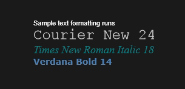
四、 TextBox
IOS
Win8&WP8
你可以使用 TextBox 控件输入和编辑未格式化的文本。你可以使用 Text 属性在 TextBox 中获取和设置文本。下面是设置了 Text 属性的一个简单 TextBox 的 XAML 代码。
XAML
下面是此 XAML 代码所产生的 TextBox。
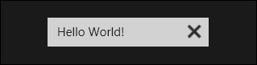
你可以通过将 IsReadOnly 属性设置为 true，从而将 TextBox 设置为只读。要让文本在多行 TextBox 中换行，请将 TextWrapping 属性设置为 Wrap，并将 AcceptsReturn 属性设置为 true。
XAML
运行效果如下图所示
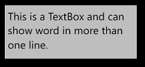
你可以在使用 SelectedText 属性的 TextBox 中获取或设置所选文本。当用户选定或取消选定文本时，使用 SelectionChanged 事件执行某些任务。下面是使用这些属性和方法的一个示例。当你在第一个 TextBox 中选定文本时，所选文本在第二个 TextBox 中显示，该控件是只读的。SelectionLength 和 SelectionStart 属性的值在两个 TextBlock 中显示。此操作使用 SelectionChanged 事件完成。
XAML
C#
private void TextBox1_SelectionChanged(object sender, RoutedEventArgs e)
{
textBox2.Text = textBox1.SelectedText;
label1.Text = "Selection length is " + textBox1.SelectionLength.ToString();
label2.Text = "Selection starts at " + textBox1.SelectionStart.ToString();
}下面是该代码的结果。
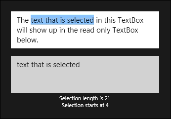
相关主题
五、 Toast
Android
toast = Toast.makeText(getApplicationContext(), "自定义位置Toast", Toast.LENGTH_LONG);
toast.setGravity(Gravity.CENTER, 0, 0);
toast.show();WP8
Toast 显示在屏幕的顶部，用于通知用户某个事件，如新闻或天气警报。除非用户通过向右轻拂关闭通知，否则 Toast 通知将显示大约 10 秒钟。如果用户点按 Toast，默认情况下，将启动应用的开始屏幕。或者，您可以选择指定应用要启动的屏幕。
Windows Phone 将用户选定的主题颜色作为 Toast 的背景色。作为开发人员，您可以使用应用的图标、标题和内容字符串创建 Toast 通知。可以显示的文本数量取决于在 Toast 消息中使用的字符以及 Title（粗体）和 Content（非粗体）的长度。如果只设置了一个 Title，则可以显示大约 40 个字符，之后的字符将被截断。如果只设置了“内容”，则可以显示大约 47 个字符。如果一个 Toast 在 Title 和 Content 之间平均拆分，则可以显示大约 41 个字符。无法放在 Toast 上的任何文本都将被截断。Windows Phone 在“标题”和“内容”的左侧显示一个小版本的应用图标。
Toast 通知创建方式有两种：通过代码在本地创建和使用云服务在外部创建。有关如何通过云服务创建Toast参见发送 Windows Phone 的推送通知，以下介绍如何创建本地Toast通知
创建本地Toast如下：
ShellToast toast = new ShellToast();
toast.Title = "[title]";
toast.Content = "[content]";
toast.Show();需要注意的是，如果当前前台应用为调用Show方法的应用，则Toast通知不会显示，所以这意味着显示Toast通知的操作应该通过后台代理实现，更多内容参见windows phone的后台代理。
显示效果如下：
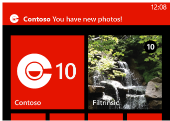
Win8
Win8中得Toast与wp的思想和作用相同，区别在于外观和现实方法。下面以一个简单示例介绍win8中如何显示Toast通知。
Win8支持多种类型模版，本示例使用ToastImageAndText01，该模板需要一个图像和一个文本字符串。更多关于其他模版信息参见 ToastTemplateType。
C#代码：
using Windows.UI.Notifications;
using Windows.Data.Xml.Dom;
//为 Toast 选取一个模板并检索其 XML 内容
ToastTemplateType toastTemplate = ToastTemplateType.ToastImageAndText01;
XmlDocument toastXml = ToastNotificationManager.GetTemplateContent(toastTemplate);
//为通知提供文本
XmlNodeList toastTextElements = toastXml.GetElementsByTagName("text");
toastTextElements[0].AppendChild(toastXml.CreateTextNode("Hello World!"));
//为通知提供图片
XmlNodeList toastImageAttributes = toastXml.GetElementsByTagName("image");
((XmlElement)toastImageAttributes[0]).SetAttribute("src", "ms-appx:///images/redWide.png");
((XmlElement)toastImageAttributes[0]).SetAttribute("alt", "red graphic");
//可以指定 Toast 持续时间
IXmlNode toastNode = toastXml.SelectSingleNode("/toast");
((XmlElement)toastNode).SetAttribute("duration", "long");
//可以指定Toast音频
IXmlNode toastNode = toastXml.SelectSingleNode("/toast");
XmlElement audio = toastXml.CreateElement("audio");
//指定应用的启用参数
((XmlElement)toastNode).SetAttribute("launch", "{\"type\":\"toast\",\"param1\":\"12345\",\"param2\":\"67890\"}");
//基于已创建的XML内容创建Toast
ToastNotification toast = new ToastNotification(toastXml);
//发送Toast通知
ToastNotificationManager.CreateToastNotifier().Show(toast);以上代码运行效果如下：
六、 Dialogue
Android
声明
AlertDialog.Builder builder = new Builder(Main.this);
builder.setMessage("确认退出吗？");
builder.setTitle("提示");
builder.setPositiveButton("确认", new OnClickListener() {
@Override
public void onClick(DialogInterface dialog, int which) {
dialog.dismiss();
Main.this.finish();
}
});
builder.setNegativeButton("取消", new OnClickListener() {
@Override
public void onClick(DialogInterface dialog, int which) {
dialog.dismiss();
}
});
builder.create().show();
}事件处理
@Override
public void onCreate(Bundle savedInstanceState) {
super.onCreate(savedInstanceState);
setContentView(R.layout.main);
Button btn = (Button)findViewById(R.id.btnOK);
//绑定匿名的监听器，并执行您所要在点击按钮后执行的逻辑代码
btn.setOnClickListener(new View.OnClickListener() {
@Override
public void onClick(View arg0) {
// TODO Auto-generated method stub
Toast.makeText(MyActivity.this, "点击了按钮", Toast.LENGTH_LONG).show();
}
});
}IOS
alertA= [[UIAlertView alloc] initWithTitle:@"我的视图" message:@"点开了A弹出对话框" delegate:self cancelButtonTitle:@"确定" otherButtonTitles: nil];
[alertA addButtonWithTitle:@"取消"];
[alertA show];
[alertA release];Win8&WP8
MessageDialog(Win8)& MessageBox(WP8)
表示对话框， 对话框具有可支持最多三个命令的命令栏。如果未指定任何命令，则添加默认命令以关闭对话框。
对话框使其后面的屏幕灰显，并阻止触控事件在用户响应之前传递到应用程序的画布。
慎用消息对话框，仅用于关键消息或必须阻断用户的流的简单问题。
C#
Win8: public sealed class MessageDialog : Object
WP8: public sealed class MessageBox示例
下面的示例演示如何将命令添加到消息对话框并显示它。有关完整的代码示例，请参见消息对话框示例。
C#
Win8:
private async void CancelCommandButton_Click(object sender, RoutedEventArgs e)
{
// Create the message dialog and set its content
var messageDialog = new MessageDialog("There’s a problem with the network path ");
// Add commands and set their callbacks; both buttons use the same callback function instead of inline event handlers
messageDialog.Commands.Add(new UICommand(
"Close",
new UICommandInvokedHandler(this.CommandInvokedHandler)));
// Set the command that will be invoked by default
messageDialog.DefaultCommandIndex = 0;
// Set the command to be invoked when escape is pressed
messageDialog.CancelCommandIndex = 1;
// Show the message dialog
await messageDialog.ShowAsync();
}
private void CommandInvokedHandler(IUICommand command)
{
// Display message showing the label of the command that was invoked
rootPage.NotifyUser("The '" + command.Label + "' command has been selected.",
NotifyType.StatusMessage);
}显示效果如下图所示：
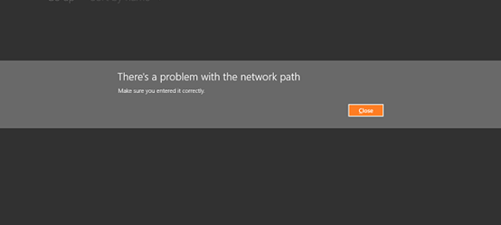
WP8:
MessageBoxResult result =
MessageBox.Show("Would you like to see the simple version?",
"MessageBox Example", MessageBoxButton.OKCancel);
if (result == MessageBoxResult.OK)
{
MessageBox.Show("No caption, one button.");
}运行效果如下所示：
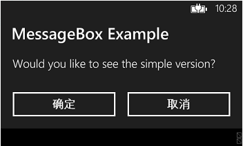
七、 Listview&GridView
Android
ListView
GridView
Win8
你可以在 XAML 中使用 ListView 或 GridView 控件来显示数据集合，如联系信息列表、库中的图像或电子邮件收件箱中的内容。
ListView 和 GridView 控件均用于显示应用中数据的集合。它们的功能十分相似，但是显示数据的方式不同。它们都派生自 ItemsControl 类。涉及到ItemsControl 时，信息会同时应用到 ListView 和 GridView 控件。
ListView 采用垂直堆叠的方式显示数据。该控件常用于显示按顺序排列的项目列表，如电子邮件列表或搜索结果列表。它在主从式列表情况下也很有用，其中的列表项仅包含少量信息，并且选定项目的详细信息会单独显示.下图左侧为ListView一个示例：
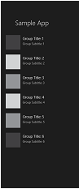 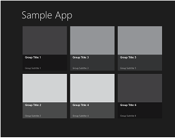
GridView 采用水平堆叠的方式显示数据。对于占驻较多控件的每个项目（如照片库），当你需要为其显示丰富的视觉信息时，该控件很常用。上图右侧为GridView的一个示例。
`向集合中添加项
可以通过使用可扩展应用程序标记语言 (XAML) 或代码向 Items 集合添加项。在以下情况下通常采用这种方式添加项：具有不更改且使用 XAML 轻松定义的少量项，或者在运行时采用代码生成项。以下是带有使用 XAML 内联定义项的ListView 和带有使用代码添加项的 GridView
XAML
C#
GridView gridView1 = new GridView();
gridView1.Items.Add("Item 1");
gridView1.Items.Add("Item 2");
gridView1.SelectionChanged += GridView_SelectionChanged;
// Add the grid view to a parent container in the visual tree.
stackPanel1.Children.Add(gridView1);`设置项目源
可以通过设置ItemsSource 属性设置项目源，同样可以在XAML或C#代码中设置。如下展示两种方式：
XAML
C#
List itemsList = new List();
itemsList.Add("Item 1");
itemsList.Add("Item 2");
// Create a new grid view, add content,
GridView gridView1 = new GridView();
gridView1.ItemsSource = itemsList;
// Add the grid view to a parent container in the visual tree.
stackPanel1.Children.Add(gridView1); `指定项目外观
可以通过设置DataTemplate属性，自定义ListView和GridView的项的外观，以下以ListView为例展示DataTemplate设置方法：
显示效果如下：
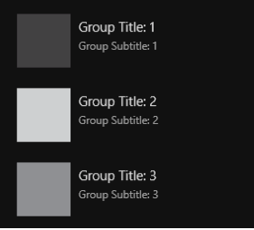
`指定控件布局
则可以设置 ItemsPanel 属性来设置控件布局。默认情况下，GridView 使用一个 WrapGrid 面板作为它的 ItemsPanel，ListView 使用一个VirtualizingStackPanel 作为它的 ItemsPanel。
以下为ListView设置ItemsPanel属性的示例：
显示效果如下：
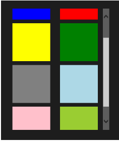
`添加标题
你可以向 ListView 或 GridView 中添加标题，方法是为 Header 属性分配一个字符串或对象。可以通过设置HeaderTemplate 属性使用数据模板 定义 Header 的布局。
默认情况下，标题显示在视图的前沿。它显示在 ListView 的顶部，GridView 的左侧。如果 FlowDirection 属性设置为 RightToLeft，则标题显示在 GridView 的右侧。
以下是为GridView添加标题的示例：
显示效果如下：
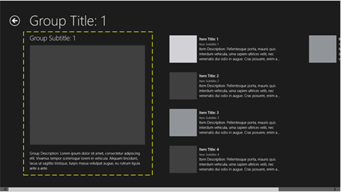
有关显示ListView和GridView控件的更多代码示例，请参阅以下示例：
● XAML ListView 和 GridView 基本示例
● XAML ListView 和 GridView 自定义交互示例
● XAML GridView 分组和 SemanticZoom 示例
WP8
1. 将 LongListSelector 控件添加到项目
若要添加 LongListSelector 控件并正确引用它，最简单的方法是将它从“工具箱”拖放到 XAML 设计器或 XAML 视图中。
添加 LongListSelector 控件的步骤
1. 在 Visual Studio 中创建面向 Windows Phone OS 8.0 的名为 LLSSample 的新 Windows Phone 应用项目。
2. 在 LLSSample 项目中，打开“工具箱”，然后单击“常见控件”。
3. 将 LongListSelector 控件从“工具箱”拖到 XAML 视图中。
2. 创建 AlphaKeyGroup 类
AlphaKeyGroup 是一个帮助器类，用于将数据的简单列表转换为分组列表，列表中的条目按键分组。在此示例中，我们使用此类来将通讯簿条目的简单列表转换为按姓氏首字母分组的列表的列表。
创建 AlphaKeyGroup 类的步骤
1. 在“解决方案资源管理器”中，右键单击 LLSSample 项目，再单击“添加”，然后单击“类”。
2. 在“添加新项”对话框中，在“名称”框中键入 AlphaKeyGroup.cs，然后单击“添加”。
3. 在 AlphaKeyGroup 类中，复制并粘贴下面的代码。
C#
using System.Collections.Generic;
using System.Globalization;
using Microsoft.Phone.Globalization;
namespace LLSSample
{
public class AlphaKeyGroup : List
{
///
/// The delegate that is used to get the key information.
///
/// An object of type T
/// The key value to use for this object
public delegate string GetKeyDelegate(T item);
///
/// The Key of this group.
///
public string Key { get; private set; }
///
/// Public constructor.
///
/// The key for this group.
public AlphaKeyGroup(string key)
{
Key = key;
}
///
/// Create a list of AlphaGroup with keys set by a SortedLocaleGrouping.
///
/// The
/// Theitems source for a LongListSelector
private static List> CreateGroups(SortedLocaleGrouping slg)
{
List> list = new List>();
foreach (string key in slg.GroupDisplayNames)
{
list.Add(new AlphaKeyGroup(key));
}
return list;
}
///
/// Create a list of AlphaGroup with keys set by a SortedLocaleGrouping.
///
/// The items to place in the groups.
/// The CultureInfo to group and sort by.
/// A delegate to get the key from an item.
/// Will sort the data if true.
/// An items source for a LongListSelector
public static List> CreateGroups(IEnumerable items, CultureInfo ci, GetKeyDelegate getKey, bool sort)
{
SortedLocaleGrouping slg = new SortedLocaleGrouping(ci);
List> list = CreateGroups(slg);
foreach (T item in items)
{
int index = 0;
if (slg.SupportsPhonetics)
{
//check if your database has yomi string for item
//if it does not, then do you want to generate Yomi or ask the user for this item.
//index = slg.GetGroupIndex(getKey(Yomiof(item)));
}
else
{
index = slg.GetGroupIndex(getKey(item));
}
if (index >= 0 && index group in list)
{
group.Sort((c0, c1) => { return ci.CompareInfo.Compare(getKey(c0), getKey(c1)); });
}
}
return list;
}
}
} 3. 创建数据的分组列表
在本节中，首先创建通讯簿条目的简单列表，然后将简单列表转换为分组列表。
创建数据的简单列表的步骤
1. 在 MainPage.xaml.cs 中，添加以下名为 AddressBook 的类。此类表示一个通讯簿条目。
C#
public class AddressBook
{
public string FirstName
{
get;
set;
}
public string LastName
{
get;
set;
}
public string Address
{
get;
set;
}
public string Phone
{
get;
set;
}
public AddressBook(string firstname, string lastname, string address, string phone)
{
this.FirstName = firstname;
this.LastName = lastname;
this.Address = address;
this.Phone = phone;
}
}C#
List source = new List();
source.Add(new AddressBook ("Joe", "Smith", "US", "48579347594"));
source.Add(new AddressBook("Jim", "Johnson", "UK", "3423423423"));
source.Add(new AddressBook("Mary", "Robert", "India", "9384394793"));
source.Add(new AddressBook("Patricia", "James", "France", "9384394793"));
source.Add(new AddressBook("Linda", "Williams", "Italy", "9384394793"));
source.Add(new AddressBook("David", "Jones", "US", "9384394793"));
source.Add(new AddressBook("Elizabeth", "Martinez", "US", "9384394793"));
source.Add(new AddressBook("Richard", "Robinson", "Germany", "9384394793"));
source.Add(new AddressBook("Charles", "Clark", "US", "9384394793"));
source.Add(new AddressBook("Joseph", "Rodriguez", "France", "9384394793"));
source.Add(new AddressBook("Susan", "Lewis", "Italy", "9384394793"));
source.Add(new AddressBook("Thomas", "Lee", "US", "9384394793"));
source.Add(new AddressBook("Margaret", "Walker", "US", "9384394793"));
source.Add(new AddressBook("Christopher", "Hall", "UK", "9384394793"));
source.Add(new AddressBook("Lisa", "Allen", "US", "9384394793"));
source.Add(new AddressBook("Daniel", "Young", "US", "9384394793"));
source.Add(new AddressBook("Paul", "Hernandez", "US", "9384394793"));
source.Add(new AddressBook("Karen", "King", "US", "9384394793"));
source.Add(new AddressBook("Ruth", "Wright", "US", "9384394793"));
source.Add(new AddressBook("Steven", "Lopez", "US", "9384394793"));
source.Add(new AddressBook("Edward", "Hill", "US", "9384394793"));
source.Add(new AddressBook("Sharon", "Scott", "US", "9384394793"));
source.Add(new AddressBook("Brian", "Green", "US", "9384394793"));
source.Add(new AddressBook("Michelle", "Ramos", "US", "9384394793"));
source.Add(new AddressBook("Ronald", "Mason", "India", "9384394793"));
source.Add(new AddressBook("Laura", "Crawford", "US", "9384394793"));
source.Add(new AddressBook("Anthony", "Burns", "US", "9384394793"));
source.Add(new AddressBook("Sarah", "Gordon", "India", "9384394793"));
source.Add(new AddressBook("Kevin", "Hunter", "US", "9384394793"));
source.Add(new AddressBook("Kimberly", "Tucker", "US", "9384394793"));
source.Add(new AddressBook("Jason", "Dixon", "US", "9384394793"));
source.Add(new AddressBook("Deborah", "Mills", "US", "9384394793"));
source.Add(new AddressBook("Matthew", "Warren", "US", "9384394793"));
source.Add(new AddressBook("Jessica", "Nichols", "US", "9384394793"));
source.Add(new AddressBook("Gary", "Knight", "US", "9384394793"));
source.Add(new AddressBook("Shirley", "Ferguson", "US", "9384394793")); 将数据的简单列表转换为按键分组的列表的列表的步骤
1. 在 MainPage() 构造函数中，添加下列代码创建一个名为 DataSource 的通讯簿条目分组列表。DataSource 中的条目按姓氏的首字母分组。
C#
> DataSource = AlphaKeyGroup.CreateGroups(source,
System.Threading.Thread.CurrentThread.CurrentUICulture,
(AddressBook s) => { return s.LastName; }, true); 在该代码中，使用 CreateGroups() 方法将 source 中条目分组。CreateGroup() 将 source 中的条目与手机 UI 区域性的字母表进行对比，并按姓氏的首字母将条目排序。
2. 数据将分组列表绑定到 LongListSelector 控件的源。
C#
AddrBook.ItemsSource = DataSource;4. 在 LongListSelector 中显示分组的数据
在本节中，使用 ItemTemplate 和 GroupHeaderTemplate 属性显示 LongListSelector 控件中的分组数据，并使用 JumpListStyle 属性定义在用户按组标题时显示的跳转列表的样式。
显示分组数据的步骤
1. 在 MainPage.xaml 中，将 IsGroupingEnabled、HideEmptyGroups、ItemTemplate 和 GroupHeaderTemplate 属性添加到 LongListSelector 元素，如下列代码所示。
XAML
在此代码中，将 LayoutMode 设置为 List，这意味着以列表格式布局通讯簿条目。将 IsGroupingEnabled 设置为 true 以将显示的项分组，并将 HideEmptyGroups 设置为 true，意即将不显示没有任何项的组。将 GroupHeaderTemplate 绑定到 DataTemplate 类，该类定义了组标题的外观，并将 ItemTemplate 绑定到 DataTemplate，它定义了每个通讯簿项目的外观。
2. 在 <phone:PhoneApplicationPage> 元素中，添加下列代码来为通讯簿项目定义 DataTemplate。
将此新的 <phone:PhoneApplicationPage.Resources> 部分置于名为 LayoutRoot 的网格之上，以确保在此定义的资源对页面上的 UI 元素可用。
XAML
3. 在 <phone:PhoneApplicationPage.Resources> 元素中，添加下列代码来为组标题定义 DataTemplate。在此示例中，组标题是姓氏的首字母。
XAML
显示跳转列表的步骤
在 <phone:PhoneApplicationPage.Resources> 元素中，添加下列代码以定义跳转列表样式。
XAML
下图所示为本主题中创建的LongListSelector控件。
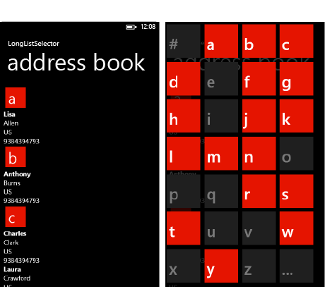
八、 Progress bar
Android
IOS
static NSString *MyIdentifier = @"MyIdentifier"; // Try to retrieve from the table view a now-unused cell with the given identifier.
UITableViewCell *cell = [tableView dequeueReusableCellWithIdentifier:MyIdentifier]; // If no cell is available, create a new one using the given identifier.
if (cell == nil)
{
// Use the default cell style.
cell = [[[UITableViewCell alloc] initWithStyle:UITableViewCellStyleDefault reuseIdentifier:MyIdentifier] autorelease];
}
// Set up the cell.
NSString *menuItem = [menuNames objectAtIndex:indexPath.row]; //根据行号显示菜单文本
cell.textLabel.text = menuItem;Win8&WP8
1. 选择进度控件样式
进度控件有 3 种（WP8中为2种）样式：确定进度条样式、不确定进度条样式和不确定进度环样式。这些样式向用户指示什么时候待完成的工作量是已知的，什么时候不是已知的，以及任务是否为模式任务。
● 确定进度条： 显示应用执行的进度状况。 在工作进行过程中，填充颜色会从左向右延伸，直到它填满进度条。 该颜色不表示用户是否可以与应用交互，就像不确定样式那样。
● 不确定进度条： 指示用户可以在任务继续执行时与 UI 交互。 在右侧的动画中，点出现在左侧，并沿着一个轨道向右移动，直到它们到达轨道的终点，到达终点后随即消失。
● 不确定进度环 ：指示在应用完成任务之前，用户活动被阻止，也就是说用户活动是模式活动。 在右侧的动画中，几个点沿着一个圆顺时针移动。(WP8中没有)
2. 添加确定进度条
确定进度条显示应用执行的进度状况。随着工作进行，进度条逐渐填满。如果你可以估计剩余工作量的时间、字节数、文件数或其他可量化的衡量单位，请使用确定进度条。
进度条提供了 3 个属性来设置和确定进度：
|
属性 |
描述 |
|
Maximum |
一个指定完成值的数字。默认值为 1.0。 |
|
Value |
一个指定当前进度的数字。如果你正在显示文件下载的进度，该值可能是已下载的字节数（而你可以将 Maximum 设置为要下载的总字节数）。 |
|
IsIndeterminate |
指定进度条是否不确定。设置为 false 可创建确定进度条。 |
创建确定进度条
1) 在你的应用中添加 ProgressBar 控件。
2) 将 IsIndeterminate 属性设置为 false。这是默认值。
3) 如果你不想使用默认的完成值 1.0，可以通过设置 Maximum 属性来更改。
4) 设置 Value 属性可显示进度。
此示例创建一个确定进度条，并将它的 Value 设置为 30，将 Maximum 设置为 100。创建的进度条显示进度完成了 30%。
XAML
显示效果如下：
更新确定进度条的值
1) 若要在代码中更新 ProgressBar 的 Value，请为 ProgressBar 指定名称，并在代码中通过名称来引用该控件。
XAML
C#
progressBar1.Value = progressPercent;2) 若要通过数据绑定来更新 Value，请将 Value 属性绑定到应用中可绑定的属性。
以下示例通过数据绑定来更新进度条的值。
XAML
3. 添加不确定进度条
如果无法估计完成任务还剩余的工作量，而且任务不阻止用户交互，请使用不确定进度条。不确定进度条不显示随着进度的完成逐渐填满的进度条，而是显示从左到右移动的点状动画。
创建不确定进度条
1. 在你的应用中添加 ProgressBar 控件。
2. 将 IsIndeterminate 属性设置为 true。
以下示例创建了不确定进度条。
XAML
显示效果如下：
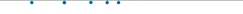
4. 添加不确定进度环（WP8中没有）
如果无法估计完成任务还剩余的工作量，而且任务会阻止用户交互，请使用不确定进度环。不确定进度环显示在圆圈中移动的点状动画。
创建不确定进度环
1. 在你的应用中添加 ProgressRing 控件。
2. 将 IsActive 属性设置为 true。
以下示例创建了不确定进度环。
XAML
显示效果如下：
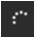